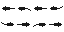

{
"packages": ["Pillow"]
}
import random
import math
from js import document
from js import window
from enum import IntEnum
from js import document, window
from pyodide import create_proxy
from PIL import Image, ImageFilter
from datetime import datetime
#OBJECT
class Canvas_Object:
#notify are events that can be listen too. stored in a dict so it can be unregerted easier.
#basicly instead of parent checking all the children for change, this will let the listern know there is a change
#let say object location move, we could rerender it, but we would need to get the ctx also we need to rerender everything
#so it better to let parent know so it can update next frame
#notify_state_change = {}
#collison_handler = None
#message_handler = None #This is more of an abstract call. it currently for testing dialog. baislcy the mesage is that it want to speak something. (aka say:meow!)
#animation_data = {}
#animation = "idle"
#direction = [1.0,0.0]
def __init__(self, x:float=0, y:float=0, width:float=1, height:float=1,sprite=None, animation_data = {}, name:str="Object", dialog_data = {}):
self.notify_state_change = {}
self.collison_handler = None
self.message_handler = None #This is more of an abstract call. it currently for testing dialog. baislcy the mesage is that it want to speak something. (aka say:meow!)
#animation_data = {}
self.animation = "idle"
self.direction : list[float] = [1.0,0.0] #should only be -1, 0, or 1
self.x : float = x
self.y : float = y
self.width : float = width
self.height : float = height
self.sprite = sprite
self.animation_data = animation_data
self.animation_speed : float = 1.0
self.name = name
self.dialog_source = dialog_data
self.data = {} #this is metadata. it contains extra data that can be added, but mostlty be unused for static objects
#this is a nav object. it should contain functions to call that the ai can used to pick a path. also could be an dict
self.navigation = None
def render(self, ctx,x_scale: float = 1.0, y_scale: float = 1.0, delta : float = 1.0):
if self.sprite != None:
if not self.animation_data:
ctx.drawImage(self.sprite, self.x, self.y, self.width, self.height)
else:
frame_width = self.animation_data["tile_x"]
frame_height = self.animation_data["tile_y"]
frame_x = 0
frame_y = 0
if self.animation in self.animation_data:
frames_data = self.animation_data[self.animation]
delay = 0
frame_ticks = 0
if "frame_delay" in frames_data:
delay = frames_data["frame_delay"]
if delay != 0 and self.animation_speed != 0:
#this is a fail check since dividing zero pcs usally hate. also would be pause or max speed in this case
delay = frames_data["frame_delay"] / (self.animation_speed * delta)
if "frame_ticks" in frames_data:
frame_ticks = frames_data["frame_ticks"]
current_frame = 0
if "current_frame" in frames_data:
current_frame = frames_data["current_frame"]
frame_x = frames_data["frames"][current_frame][1] * frame_width
frame_y = frames_data["frames"][current_frame][0] * frame_height
if self.animation_speed == 0:
#if speed is 0, ignore updates since animation is paused
self.animation_data[self.animation]["current_frame"] = 0
#self.animation_data[self.animation]["frame_ticks"] = 0
pass
else:
if frame_ticks >= delay:
if (current_frame + 1) < len(frames_data["frames"]) and current_frame >= 0:
#note need to set it in the dict ref, not the possible clone of it
self.animation_data[self.animation]["current_frame"] = current_frame + 1
#elif current_frame + 1 == len(frames_data["frames"][current_frame]):
# self.animation_data["current_frame"] = 0
else:
self.animation_data[self.animation]["current_frame"] = 0
self.animation_data[self.animation]["frame_ticks"] = 0
else:
self.animation_data[self.animation]["frame_ticks"] = frame_ticks + 1
ctx.drawImage(
self.sprite,
frame_x, frame_y,
frame_width,
frame_height,
self.x,
self.y,
self.width * x_scale,
self.height * y_scale
)
def on_clicked(self)->bool:
if True:
#Note: no logic here, so returning false
#below is an example of a change in state and a vaild clickable object
return False
else:
self.notify(self.notify_state_change)
return True
def ai_update(self, wolrd_ctx = None, delta : float = 1.0):
pass
def notify(self,notify_dict):
for listerner in notify_dict:
notify_dict[listerner](self)
def set_direction(self,x:float=0.0,y:float=0.0):
self.direction[0] = x
self.direction[1] = y
def move_to(self,x:float=0.0,y:float=0.0, x_speed:float=1.0, y_speed:float=1.0):
direction = self.normalize(x - self.x, y - self.y)
self.set_direction(direction[0],direction[1])
self.x += self.direction[0] * x_speed
self.y += self.direction[1] * y_speed
def vector_magnitude(self,x:float=0.0, y:float=0.0) -> float:
return math.sqrt(x * x + y * y)
def normalize(self,x:float=0.0, y:float=0.0) -> list[float]:
return_value = [x,y]
if x != 0 and y != 0:
magnitude = self.vector_magnitude(x,y)
return_value[0] = x/magnitude
return_value[1] = y/magnitude
return return_value
def __str__(self):
return ("Canvas_Object")
#SCENE
##A Scene is data relating to a js element or a viewspace. It role is to handle what is displayed on it
##addition data could be provided. Owner can listen by regersting this in a diction with an id or similar base on the source
##and then use the funtion pass by the events to cross ref the ownership
class Scene:
def __init__(self, id, events):
self._events = {} #moving events here so thet can be unquie
print("test")
#this is the doctument source of the doc element that owns this.
self.source = document.getElementById(id)
#an override of the bounds
self.bounds = [0,0,self.source.width,self.source.height]
for event_id in events:
#event_proxy = create_proxy(events[event_id])
self.add_event(event_id,events[event_id])
def __del__(self):
event_ref = self._events.copy()
for event_id in event_ref:
self.remove_event(event_id)
#Note: There are also window events. either have parent handle that or add a second group of events depenent on the window events
def add_event(self, event_id, event):
event_proxy = create_proxy(event)
self.source.addEventListener(event_id, event_proxy)
self._events[event_id] = event_proxy
def remove_event(self, event_id):
event_proxy = self._events[event_id]
self.source.removeEventListener(event_id, event_proxy)
event_proxy.destroy()
del self._events[event_id]
#the owner(main handler) should call to make sure the logic runs here as well so the owner wont need to caculate everything directly
def handle_event(self, event):
pass
def update(self):
pass
##Canvas Scene is base on the canvas and will have functions for basic canvas stuff
class Canvas_Scene(Scene):
def __init__(self, id, events):
super().__init__(id, events)
#NOTE: need to define objects in init else all canvas scenes will use the same array
self.objects = []
self.is_mousedown = False #this is a shared flag so that mouse down and up events can be handled without recreating the logic
def render(self, delta : float = 1.0):
ctx = self.source.getContext("2d")
#caculate zones such as title bar and content
width = self.source.width
height = self.source.height
ctx.reset()
for obj in self.objects:
obj.ai_update(None,delta)
obj.render(ctx, 1.0, 1.0, delta)
##This sends a message from object to scene. The message is an abstract event so what is sent could be anything. An exampe is if the object want thew scen to display 'meow'
def message_handler(self,object,type,message):
pass
##this is called by object to check if a point has collsion. Will return a dictionary of data of the collsion. {"blocked":True} would mean there was collsion
def collison_handler(self,x:float=0,y:float=0,z:float=0,data=None)-> dict:
max_x =self.bounds[2]
max_y = self.bounds[3]
data = {"blocked":False}
if x >= max_x or x <= self.bounds[0]:
data["blocked"] = True
data["x_blocked"] = True
if y >= max_y or y <= self.bounds[1]:
data["blocked"] = True
data["y_blocked"] = True
return data
def assign_object(self,obj):
#if self.objects == None:
# self.objects = []
self.objects.append(obj)
obj.notify_state_change[self]=self.on_object_state_change
obj.collison_handler = self.collison_handler
obj.message_handler = self.message_handler
#These will return true if there was a change
#but did not add condtions so it will set the flag regardless
#these are helper private functions. on_mousedown and on_mouseup may call them to change the mousestate and use the return values to know if there is a change
def _mousedown(self) -> bool:
state_change = self.is_mousedown != True
self.is_mousedown = True
return state_change
def _mouseup(self)-> bool:
state_change = self.is_mousedown != False
self.is_mousedown = False
return state_change
#MAIN SCENE
class Main_Scene(Scenes.Canvas_Scene):
def __init__(self, id, events):
super().__init__(id, events)
#NOTE: need to define objects in init else all canvas scenes will use the same array
self.objects = []
self.title_text:str = "Title"
#will decide how to handle colors since some thing may use sprite sheets for textures like the title bar background(and content background)
#could use a callable like with the events to listen for child changes, or could have the scene have functions to modify it and the object acts as data for display
#NOTE: could keep as an array and add more var, or could change to a dict of arrays and have assign object have an optional parameter for type
#first probably still better and then keep a function for each types. could use array/dict of arrays for z index but may be better to reserver layers thand handle dynamic layers
#objects = []
self.title_source = None
#NOTE: dialog may be here and in the object depending on use case. here only if dialog is reusable, in object if each object may hove its own dialog tree
self.dialog_source = None
def set_title(self, title:str):
if self.title_source != None:
self.title_source.textContent = title
def set_dialog(self, dialog:str):
if self.dialog_source != None:
self.dialog_source.textContent = dialog
def on_object_state_change(self,obj):
self.render()
#def assign_object(self,obj):
# self.objects.append(obj)
# obj.notify_state_change[self]=self.on_object_state_change
# obj.collison_handler = self.collison_handler
# obj.message_handler = self.message_handler
#handle self when there is a js event since owner should be handling the rebinding
def handle_event(self, event):
#ctx = self.source.getContext("2d")
time_triggered = datetime.now()
#self.set_dialog("the event {" + str(event.type) + "} was triggered at " + str(time_triggered)) #note: this would mess up dialog and stuff. so should only print data if no dialog is in process(or catch data in a log and flop between the two as needed)
if event.type == "mousedown" or event.type == "touchstart":
bounds = self.source.getBoundingClientRect()
x = event.clientX - bounds.left
y = event.clientY - bounds.top
for obj in self.objects:
if x >= obj.x and x <= obj.x + obj.width:
if y >= obj.y and y <= obj.y + obj.height:
if obj.on_clicked():
break
def render(self, delta : float = 1.0):
ctx = self.source.getContext("2d")
#caculate zones such as title bar and content
width = self.source.width
height = self.source.height
ctx.reset()
#render all the objects
for obj in self.objects:
obj.ai_update(None,delta)
obj.render(ctx,1.0,1.0,delta)
#def collison_handler(self,x:float=0,y:float=0,z:float=0,data=None)-> dict:
# max_x =self.source.width
# max_y = self.source.height
# if x >= max_x or x <= 0:
# return {"blocked":True}
# if y >= max_y or y <= 0:
# return {"blocked":True}
# return {"blocked":False}
def message_handler(self,object,type,message):
if type == "Say":
self.set_dialog(str(object.data["name"]) + " : " + str(message))
def __str__(self):
return ("Main_Scene")
#FISHING SCENE
class INTERACTION_STATE(IntEnum):
READY = 0
REELING = 1
CASTED = 2 #should be condensed into reeling
HOOKED = 3 #should be condensed into reeling
CATCH = 4
class Fishing_Scene(Scenes.Canvas_Scene):
def __init__(self, id, events):
super().__init__(id, events)
self.objects = []
self.title_text:str = "Title"
self.title_source = None
self.dialog_source = None
self.reeling_strength = 0.0
self.bobber = Bobber(0,0,8,8)
self.bounds = [0,150,self.source.width,min(300,self.source.height)]
self.interaction_state : INTERACTION_STATE = INTERACTION_STATE.READY
self.fish_data = {}
self.fish_caught : Fish.Fish = None
self.tagged_fish = [] #this is to help notify fish that are tracking the bobber when there is a hook
def set_title(self, title:str):
if self.title_source != None:
self.title_source.textContent = title
def set_dialog(self, dialog:str):
if self.dialog_source != None:
self.dialog_source.textContent = dialog
def handle_event(self, event):
ctx = self.source.getContext("2d")
if event.type == "mousedown" or event.type == "touchstart":
bounds = self.source.getBoundingClientRect()
x = event.clientX - bounds.left
y = event.clientY - bounds.top
self.on_cast(x,y)
def on_cast(self, x : float = 0.0, y : float = 0.0):
if self.interaction_state == INTERACTION_STATE.READY:
for obj in self.objects:
dist_x = x - obj.x
dist_y = y - obj.y
dist = math.sqrt(dist_x * dist_x + dist_y * dist_y )
if dist < 16:
obj.set_ai_state(Fish.AI_STATE.PANICKED)
#obj.on_clicked()
if x > self.bounds[0] and x < self.bounds[2] and y > self.bounds[1] and y < self.bounds[3]:
self.bobber.x = x
self.bobber.y = y
self.interaction_state = INTERACTION_STATE.REELING
self.set_dialog("")
elif self.interaction_state == INTERACTION_STATE.REELING:
self.on_reel()
def on_hook(self,fish:Fish.Fish = None):
if fish != None and self.fish_caught == None:
self.fish_caught = fish
if self.fish_caught.name in self.fish_data.keys():
pass
else:
self.generate_new_fish(fish)
self.fish_caught.set_ai_state(Fish.AI_STATE.HOOKED)
self.set_dialog(str(fish.name) + " is hooked.")
def on_catch(self):
if self.fish_caught != None:
weight = "{:.2f}".format(self.fish_caught.weight)
self.set_dialog(str(self.fish_caught.name) + " caught weighing " + weight +"kg")
self.fish_caught.set_ai_state(Fish.AI_STATE.SUBMERGED)
self.fish_caught = None
self.interaction_state = INTERACTION_STATE.READY
pass
def on_reel(self) :
self.reeling_strength = min(self.reeling_strength + 1,25)
def reeling_update(self,delta):
center = self.source.width/2
fish_strength = 0.0
if self.fish_caught != None:
fish_strength = random.random()*self.fish_caught.weight
#NOTE: the bobber ai(if used) should run after this and fish ai before this.
reeling_strength = (self.reeling_strength - fish_strength) * delta
clamped_reeling_strength = min(max(reeling_strength,0.01),4)
if reeling_strength > 0:
self.bobber.move_to(center,self.source.height,clamped_reeling_strength,clamped_reeling_strength)
if self.is_reeled_in():
self.interaction_state = INTERACTION_STATE.READY
self.reeling_strength = 0
self.on_catch()
elif reeling_strength < 0:
#TODO: set the bobber move to location base on the fish desired location (need to set on when in hooked state still and handle how often it changes)
#NOTE: get the rod look at direction to the fish desire location and then times it by the length of the remaining line. Then just need to pick which one
#that has the shortest length
pass
if self.reeling_strength > 0:
self.reeling_strength = max(self.reeling_strength - delta,0)
def is_reeled_in(self):
return self.bobber.y >= self.source.height
def is_holding_button(self,x:float=0.0,y:float=0.0) -> bool:
if self.is_mousedown:
button_bounds = self.get_button_bounds()
if x >= button_bounds[0] and x <= button_bounds[0]+button_bounds[2]:
if y >= button_bounds[1] and y <= button_bounds[1]+button_bounds[3]:
return True
return False
def render(self, delta : float = 1.0):
ctx = self.source.getContext("2d")
#caculate zones such as title bar and content
width = self.source.width
height = self.source.height
ctx.reset()
self.reeling_update(delta)
for obj in self.objects:
ratio = obj.y / self.bounds[3]
if self.interaction_state == INTERACTION_STATE.REELING and self.fish_caught == None and obj.target == None:
length = obj.vector_magnitude(self.bobber.x - obj.x ,self.bobber.y - obj.y)
if length < 32:
obj.target = self.bobber
self.tagged_fish.append(obj)
else:
obj.targer = None
obj.ai_update({"bobber":self.bobber},delta)
elif self.fish_caught != None and self.tagged_fish:
#Will remove the fish target if a fish is caught on the line
fish = self.tagged_fish.pop()
if fish != self.fish_caught:
fish.target = None
else:
obj.ai_update(None,delta)
obj.render(ctx,ratio,ratio,delta)
if self.interaction_state == INTERACTION_STATE.REELING:
ratio = self.bobber.y / self.bounds[3]
self.bobber.render(ctx,ratio,ratio)
def draw_bobber(self,ctx):
self.bobber.render(ctx)
def pick_fish_type(self):
fish_types = self.fish_data.keys()
if fish_types:
return random.choice(list(self.fish_data.keys()))
return None
##This will change the fish data so the fish object can be reused
def generate_new_fish(self,fish):
new_name = self.pick_fish_type()
if new_name != None:
min_size = self.fish_data[new_name]["min_weight"]
max_size = self.fish_data[new_name]["max_weight"]
fish.name = new_name
fish.weight = random.random() * (max_size - min_size) + min_size
def message_handler(self,object,type,message):
if type == "Bite":
self.on_hook(object)
def assign_object(self,obj):
super().assign_object(obj)
obj.navigation = { "bounds": self.bounds}
def on_object_state_change(self,obj):
pass
def __str__(self):
return ("Main_Scene")
#declaring it here since this is the only place it will be used. other places would assume it is an object
class Bobber(Objects.Canvas_Object):
def __init__(self, x:float=0, y:float=0, width:float=1, height:float=1,sprite=None, animation_data = {}, name:str="Bobber", dialog_data = None):
super().__init__(x,y,width,height,sprite,animation_data,name,dialog_data)
self.move_location = [0,0]
def render(self, ctx,x_scale=1.0, y_scale=1.0, delta : float = 1.0):
if self.sprite != None:
super().render(ctx,x_scale,y_scale)
else:
ctx.fillStyle = 'blue'
ctx.fillRect(
self.x-self.width/2,
self.y-self.height/2,
self.width * x_scale,
self.height * y_scale
)
#FISH
class AI_STATE(IntEnum):
IDLE = 0
SWIMING = 1
PANICKED = 2
HOOKED = 3
SUBMERGING = 4
SUBMERGED = 5
SURFACING = 6
class Fish(Objects.Canvas_Object):
def __init__(self, x:float=0, y:float=0, width:float=1, height:float=1,sprite=None, animation_data = {}, name:str="Fish", dialog_data = None):
super().__init__(x,y,width,height,sprite,animation_data,name,dialog_data)
self.ai_state : AI_STATE = AI_STATE.IDLE
self.animation = "swim_right"
self.speed = [3.0,1.0]
self.speed_mod : float = 1.0
self.move_location = [0,0]
self.default_animation_speed : float = 3.0
self.weight : float = 1.0
self.wait_time : float = 0.0
self.panic_time : float = 0.0
self.submerge_time : float = 0.0
self.submerge_depth : float = 0.0
self.target = None #if not hooked, then will use this to try to swim to or decide to ignore. if hooked, then will follow/stick-to it
self.stamina : float = 100.0
self.stamina_regen : float = 0.1 #this is base off of seconds. so delta of 0.1 would regen 0.01 per tick
#test action. return bool to state if there been an interaction. default should be null
#unless used. currently used for debugging
def on_clicked(self)->bool:
self.set_ai_state(AI_STATE.PANICKED)
return True
def ai_update(self,wolrd_ctx = None, delta : float = 1.0):
if self.ai_state == AI_STATE.IDLE:
self.wait_update(delta)
pass
elif self.ai_state == AI_STATE.SWIMING:
if self.swiming_update(delta):
if self.target != None:
length = self.vector_magnitude(self.target.x - self.x ,self.target.y - self.y)
if length < 8:
#self.set_ai_state(AI_STATE.HOOKED)
self.message_handler(self,"Bite", self.name)
else:
self.set_ai_state(AI_STATE.IDLE)
else:
self.set_ai_state(AI_STATE.IDLE)
pass
elif self.ai_state == AI_STATE.HOOKED:
#if self.swiming_update(delta):
# self.set_random_location()
self.hook_update(delta)
elif self.ai_state == AI_STATE.PANICKED:
if self.swiming_update(delta):
self.set_random_location()
self.panic_update(delta)
elif self.ai_state == AI_STATE.SUBMERGED:
if self.swiming_update(delta):
self.set_random_location()
self.submerge_update(delta)
pass
elif self.ai_state == AI_STATE.SURFACING:
if self.swiming_update(delta):
self.set_random_location()
self.surfacing_update(delta)
pass
elif self.ai_state == AI_STATE.SUBMERGING:
if self.swiming_update(delta):
self.set_random_location()
self.submerging_update(delta)
self.animation_speed = self.default_animation_speed * self.speed_mod
if wolrd_ctx != None and (self.ai_state == AI_STATE.SWIMING or self.ai_state == AI_STATE.IDLE):
if "bobber" in wolrd_ctx:
bobber = wolrd_ctx["bobber"]
bobber_x = bobber.x - bobber.width/2
bobber_y = bobber.y - bobber.height/2
dist_from_bobber = self.vector_magnitude(bobber_x - self.x ,bobber_y - self.y)
if dist_from_bobber < 32: #note this value may be something gain from the bobber data modifed by the fish senses
if round(bobber_x) != round(self.x) and round(bobber_y) != round(self.y):
self.move_location[0] = bobber_x
self.move_location[1] = bobber_y
else:
self.message_handler(self,"Bite", self.name)
def hook_update(self,delta : float = 0.1):
if self.target == None:
self.set_ai_state(AI_STATE.IDLE)
else:
length = self.vector_magnitude(self.target.x - self.x , self.target.y - self.y)
if length > 32:
self.target = None
else:
self.x = self.target.x - self.target.width
self.y = self.target.y - self.target.height
def swiming_update(self, delta : float = 0.1) -> bool:
if round(self.move_location[0]) != round(self.x) and round(self.move_location[1]) != round(self.y):
self.move_to(self.move_location[0],self.move_location[1],self.speed[0]*self.speed_mod,self.speed[1]*self.speed_mod)
else:
return True
return False
def wait_update(self,delta : float = 0.1):
if self.wait_time > 0.0:
self.wait_time = self.wait_time - delta
else:
if self.target != None:
self.move_location[0] = self.target.x - self.target.width
self.move_location[1] = self.target.y - self.target.height
else:
self.set_random_location()
self.set_ai_state(AI_STATE.SWIMING)
def panic_update(self,delta : float = 0.1):
if self.panic_time > 0.0:
self.panic_time = self.panic_time - delta
else:
self.set_ai_state(AI_STATE.IDLE)
def submerge_update(self,delta : float = 0.1):
if self.submerge_time > 0.0:
self.submerge_time = self.submerge_time - delta
else:
self.set_ai_state(AI_STATE.SURFACING)
def surfacing_update(self,delta : float = 0.1):
if self.submerge_depth < 0.0:
self.submerge_depth = self.submerge_depth + delta * random.random()
else:
self.set_ai_state(AI_STATE.IDLE)
def submerging_update(self,delta : float = 0.1):
if self.submerge_depth > -1.0:
self.submerge_depth = self.submerge_depth - delta * random.random()
else:
self.set_ai_state(AI_STATE.SUBMERGED)
def set_ai_state(self,new_state:int):
#basicly 0 is default state and 1 is startled.
if self.ai_state != new_state:
self.ai_state = new_state
if self.ai_state == AI_STATE.IDLE:
self.wait_time = random.randint(1,25)
elif self.ai_state == AI_STATE.PANICKED:
self.panic_time = random.randint(5,50)
self.speed_mod = 2.0
elif self.ai_state == AI_STATE.SUBMERGED:
self.submerge_time = random.randint(5,50)
self.submerge_depth = -1.0
else:
self.speed_mod = 1.0
def set_direction(self,x:float=0.0,y:float=0.0):
super().set_direction(x,y)
if self.direction[0] > 0:
self.animation = "swim_right"
elif self.direction[0] < 0:
self.animation = "swim_left"
def set_random_location(self,bounds = [0,0,0,0]):
if self.navigation != None and bounds == [0,0,0,0]:
if "bounds" in self.navigation:
bounds = self.navigation["bounds"]
self.move_location[0] = random.randrange(bounds[0],bounds[2])
self.move_location[1] = random.randrange(bounds[1],bounds[3])
def render(self, ctx,x_scale: float = 1.0, y_scale: float = 1.0, delta : float = 1.0):
ctx.globalAlpha = max(self.submerge_depth+1,1)
super().render(ctx, x_scale, y_scale, delta)
ctx.globalAlpha = 1.0
def __str__(self):
return self.name
#FISHING
fish_div = document.getElementById('fish')
local_storage = window.localStorage
scenes = {}
animation_data = {}
fish_data = {}
def handle_events(event):
event_owner_id = event.target.id
if event_owner_id in scenes:
owner = scenes[event_owner_id]
owner.handle_event(event)
common_events = {
"click":handle_events,
"mousedown":handle_events,
"touchstart":handle_events,
"mouseup":handle_events,
"touchend":handle_events,
"mousemove":handle_events,
"touchmove":handle_events
}
if os.path.exists('animation_data.json'):
with open('animation_data.json', 'r') as file:
animation_data = json.load(file)
else:
animation_data = {
"default": {
"tile_x":32,
"tile_y":32,
"idle": {"frames":[[0,0]]},
"walk": {"frames":[[1,0],[1,1],[1,2],[1,3]],"frame_delay":0.2},
"sit": {"frames":[[2,0]]},
"lay": {"frames":[[3,0]]}
},
"fish": {
"tile_x":16,
"tile_y":16,
"idle": {"frames":[[0,0]]},
"swim_left": {"frames":[[0,0],[0,1],[0,2],[0,3]],"frame_delay":1.0},
"swim_right": {"frames":[[1,0],[1,1],[1,2],[1,3]],"frame_delay":1.0}
}
}
if os.path.exists('fish_data.json'):
with open('fish_data.json', 'r') as file:
fish_data = json.load(file)
else:
fish_data = {
"Carp": {
"min_weight":1.0,
"max_weight":15.0,
"aggressiveness":1.0,
"diet":["vegeatbles","bread","nuts","worms","cut_bait"],
"saltwater": false,
"detection_range":32.0,
"freshwater": true
},
"Catfish": {
"min_weight":0.5,
"max_weight":100.0,
"aggressiveness":1.0,
"diet":["live-bait","cut_bait"],
"saltwater": false,
"detection_range":32.0,
"freshwater": true
},
"Crappie": {
"min_weight":0.25,
"max_weight":0.75,
"aggressiveness":1.0,
"diet":["vegeatbles","bread","nuts","worms","cut_bait"],
"saltwater": false,
"detection_range":32.0,
"freshwater": true
},
"Trout": {
"min_weight": 1.0,
"max_weight": 8.0,
"aggressiveness":1.0,
"diet":["insects","small_fish","live_bait"],
"saltwater": false,
"detection_range":32.0,
"freshwater": true
},
"Largemouth Bass": {
"min_weight":0.5,
"max_weight":2.0,
"aggressiveness":1.0,
"diet":["insects","small_fish","live_bait","worms","cut_bait"],
"saltwater": false,
"detection_range":32.0,
"freshwater": true
},
"Salmon": {
"min_weight":3.0,
"max_weight":6.0,
"aggressiveness":1.0,
"diet":["insects","small_fish","live_bait","vegeatbles","bread","nuts","worms","cut_bait"],
"saltwater": true,
"detection_range":32.0,
"freshwater": true
},
"Smallmouth Bass": {
"min_weight":0.4,
"max_weight":2.4,
"aggressiveness":2.0,
"diet":["crayfish"],
"saltwater": false,
"detection_range":32.0,
"freshwater": true
},
"Sturgeon": {
"min_weight":160.0,
"max_weight":360.0,
"aggressiveness":2.0,
"diet":["crayfish","small_fish","worms","clams"],
"saltwater": false,
"detection_range":32.0,
"freshwater": true
},
"Walleye": {
"min_weight":4.0,
"max_weight":10.0,
"aggressiveness":1.0,
"diet":["small_fish","worms"],
"saltwater": false,
"detection_range":32.0,
"freshwater": true
}
}
scenes["canvas_fishing_room"] = Fishing_Scene.Fishing_Scene("canvas_fishing_room",common_events)
scenes["canvas_fishing_room"].title_source = document.getElementById("title_fishing_room")
scenes["canvas_fishing_room"].dialog_source = document.getElementById("dialog_fishing_room")
scenes["canvas_fishing_room"].set_title("Fishing Room")
scenes["canvas_fishing_room"].fish_data = fish_data
bounds = scenes["canvas_fishing_room"].bounds
for i in range(0,10):
scenes["canvas_fishing_room"].assign_object(
Fish.Fish(random.randint(bounds[0],bounds[2]),random.randint(bounds[1],bounds[3]),16,16,document.getElementById("fish_image"), animation_data["fish"])
)
scenes["canvas_fishing_room"].render()
#this is a timer test. ensure_future was the only one that worked
import asyncio
async def update_tick():
delta : float = 0.1
while True:
await asyncio.sleep(delta)
scenes["canvas_fishing_room"].render(delta)
asyncio.ensure_future(update_tick())